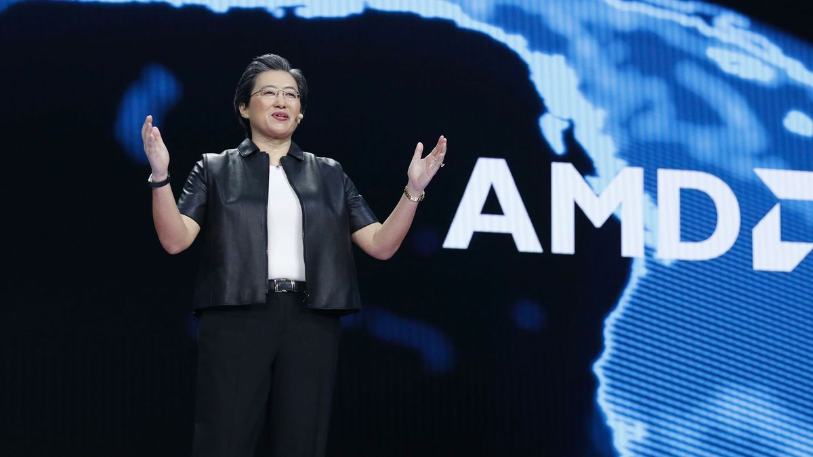

Recognition and Leadership in the Tech Industry
Industry Recognition:
-
Regularly featured on Fortune's list of the Most Powerful Women in Business.
-
Named one of the world's best CEOs by Barron's.
-
Inducted as a Fellow of the IEEE for her contributions to the semiconductor industry.
Awards and Honors:
-
Received the Robert N. Noyce Medal from IEEE in 2021, honoring her contributions to microelectronics.
-
Honored with the Global Semiconductor Alliance Dr. Morris Chang Exemplary Leadership Award in 2018.
-
Named Fortune's Businessperson of the Year in 2020 for her leadership and achievements at AMD.
Board Memberships and Advisory Roles:
-
Serves on the Board of Directors of Cisco Systems and the Global Semiconductor Alliance.
-
Contributes to various academic and industry bodies through advisory roles, guiding future technology and innovation.
Educational Contributions:
-
Advocates for STEM education and mentors young engineers and leaders in the technology field, promoting diversity and inclusion in tech.

- 01
- 02
- 03
- 04